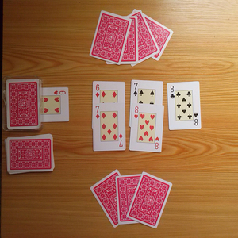
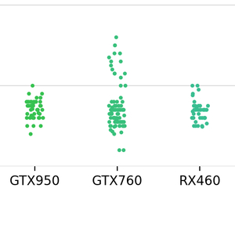

I have always been inspired by technology and attracted by things which nature I cannot understand. However, after graduation from school, I made a choice in favor of obtaining higher education in the field of construction. I was attracted by the transparency and clarity of my work and the potential for applying mathematics and physics as applied disciplines. It was these factors that became decisive in choosing a university, department, and curriculum.
At the same time, during the passage of various practices from the university, the problem of insufficient optimization and the routine work that I had to do was particularly hard on me. For all the time of my internships in engineering field I came across various estimates, acts, reports, graphs, diagrams and monotonous operations on them. It was this routine that later pushed me along the path associated with data analysis.
I found out that the field of data analysis exists in 2016 when I stumbled upon a machine learning course from Andrew Ng. At that time, I had no ideas about data analysis and machine learning. In order to learn more about data analysis, I started a specialization in "data analysis in R" on coursera. Unfortunately, I completed only 1 course out of 10. During the second course I encountered a code that I could not understand. However, the first course only ignited my initial interest in data analysis.
After graduation from university, while searching for a civil engineering job, I decided to try a python. To my surprise, writing python scripts turned out to be way more exciting for me than learning R and civil engineer activities. After that discovery I instantly stopped searching for a job. It was thanks to python that it became possible for me to return to the field of data analysis, which I did not succeed in initially revealing with R.
At that point, understanding infinite applications and ways to apply the fields associated with data analysis attracts me with its speed of development, versatility and expanding application possibilities for a task from absolutely any industry.
I enjoy spending time on improving data analysis skills, solving challenges on codesignal , hackerrank and brilliant
Combining knowledge of applied math, CS and certain field is the best way to satisfy my curiosity known for me so far. I enjoy spending time on developing my data analysis skills.
During freetime, except improving data analysis skills, I enjoy reading, rollerblading, skiing and playing chess.
Time series forecast using the python data scinence stack, statsmodels, pyramid-arima, and fbprophet python libraries.
As a result of comparing the best forecasting models with the existing Company forecasting model, taking into account cross-validation, mean absolute error in percent was reduced by 3% comparing to the existing model.

In a childhood I enjoyed playing that funny game with a grandmother. Currently I am interested about applying AI in order to define an optimal player strategy and satisfy my curiosity. In order to answer those questions I am in a process of creation a solution which is using python ML\DL libraries and follows Object Oriented Paradigm.
View Project
Collection and visualization of the GPUs prices sold on Avito. Idea of the project was to find the diffrenece that could be earned during the GPU reselling process.
View Project